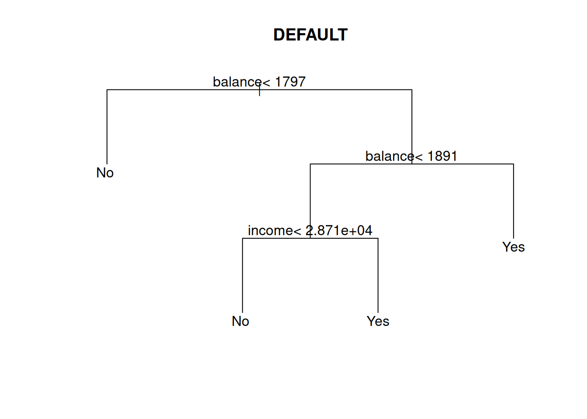

library(ISLR)
# load data
data(Default)
# inspect first few rows
head(Default)7 Classification
Classification shares many similarities with regression: We have a response variable \(Y\) and a set of one or more predictors \(X_1,\dotsc,X_p\). The difference is that for classification problems, the response \(Y\) is discrete, meaning \(Y\in\{1,2,\dotsc,C\}\) where \(C\) is the number of classes that \(Y\) can take on.
We will focus our attention on binary responses \(Y\in\{0,1\}\), but all of the methods we discuss can be extended to the more general case outlined above.
To illustrate classification methods, we will use the Default data in the ISLR R library. The data set contains four variables: default is an indicator of whether the customer defaulted on their debt, student is an indicator of whether the customer is a student, balance is the average balance that the customer has remaining on their credit card after making their monthly payment, and income is the customer’s income.
| default | student | balance | income |
|---|---|---|---|
| No | No | 729.5265 | 44361.625 |
| No | Yes | 817.1804 | 12106.135 |
| No | No | 1073.5492 | 31767.139 |
| No | No | 529.2506 | 35704.494 |
| No | No | 785.6559 | 38463.496 |
| No | Yes | 919.5885 | 7491.559 |
We also need to split up the data into training and test samples in order to measure the predictive accuracy of different approaches to classification.
train = Default[1:7000,]
test = Default[7001:10000,]7.1 \(k\)-Nearest Neighbors
The \(k\)-NN algorithms are built on the following idea: given a new observation \(X^*\) for which we want to predict an associated response \(Y^*\), we can find values of \(X\) in our data that look similar to \(X^*\) and then classify \(Y^*\) based on the associated \(Y\)’s. We will use Euclidean distance is a measure of similarity (which is only defined for real-valued \(X\)’s).
Let’s take a small portion (first 10 rows) of the Default data to work through a simple example. Notice that we will exclude the student variable since it is a categorical rather than numeric variable. We will use the 11th observation as our “test” data \(X^*\) that we want to make predictions for.
X = Default[1:10,3:4]
Y = Default[1:10,1]
newX = Default[11,3:4]We now need to compute the similarity (i.e., Euclidean distance) between \(X^*=(X_1^*,X_2^*)\) and \(X_i=(X_{1i},X_{2i})\) for each \(i=1,\dotsc,n\).
\[dist(X^*,X_i)=||X^*-X_i||=\sqrt{(X_1^*-X_{1i})^2+(X_2^*-X_{2i})^2}\]
To do this in R, we can take use the apply( ) function. The first argument is the matrix of \(X\) variables that we want to cycle through to compare with \(X^*\).
The second argument of the apply( ) function tells R whether we want to perform an operation for each row (=1) of for each column (=2). The last row tells R what function we want to compute. Here, we need to evaluate \(dist(X^*,X_i)\) for each row.
distance = apply(X,1,function(x)sqrt(sum((x-newX)^2)))
distance 1 2 3 4 5 6 7 8
22502.381 9799.072 9954.126 13843.541 16611.013 14408.889 3144.449 4346.510
9 10
15640.610 7404.195 Notice that the function returns a set of 10 distances. If we wanted to use the 1st-nearest neighbor classifier to predict \(Y^*\), for example, then we would need to find the \(Y\) value of \(X_i\) for the observation \(i\) that has the smallest distance. We can find that value using the which.min( ) function.
which.min(distance)7
7 Y[which.min(distance)][1] No
Levels: No YesTherefore, we would predict \(Y^*=No\) having observed \(X^*\).
Now let’s go back to the full data set and test the performance of the \(k\)-NN classifier. The first thing we should do is standardize the \(X\)’s since the nearest neighbors algorithm depends on the scale of the covariates.
stdtrainX = scale(train[,3:4])
stdtestX = scale(test[,3:4])
summary(stdtrainX) balance income
Min. :-1.72782 Min. :-2.46318
1st Qu.:-0.73329 1st Qu.:-0.92073
Median :-0.03045 Median : 0.08042
Mean : 0.00000 Mean : 0.00000
3rd Qu.: 0.68581 3rd Qu.: 0.77299
Max. : 3.45400 Max. : 3.00595 Now we can use the knn( ) function in the class R library to run the algorithm on the training data and then make predictions for each observation in the test data. The first argument calls for the \(X\)’s in the training data, the second calls for the \(X\)’s in the test data (for which we want to predict), the third calls for the \(Y\)’s in the training data, and the fourth calls for \(k\), the number of nearest neighbors we want to use to make the prediction.
library(class)
knn1 = knn(stdtrainX, stdtestX, train$default, k=1)The knn1 object now contains a vector of predicted \(Y\)’s for each value of \(X\) in the test data. We can then compare the predicted response \(\hat{Y}\) to the true response in the test data \(Y\) to assess the performance of the classification algorithm. In particular, we will see the fraction of predictions the algorithm gets wrong.
mean(knn1 != test$default)[1] 0.04466667In this case, the 1-NN classifier as an error rate of about 4.5% (or equivalently, an accuracy of 95.5%).
We can try increasing \(k\) to see if there is any effect on predictive fit.
# 5 nearest neighbors
knn5 = knn(stdtrainX, stdtestX, train$default, k=5)
mean(knn5 != test$default)[1] 0.029# 10 nearest neighbors
knn10 = knn(stdtrainX, stdtestX, train$default, k=10)
mean(knn10 != test$default)[1] 0.02633333# 50 nearest neighbors
knn50 = knn(stdtrainX, stdtestX, train$default, k=50)
mean(knn50 != test$default)[1] 0.024# 100 nearest neighbors
knn100 = knn(stdtrainX, stdtestX, train$default, k=100)
mean(knn100 != test$default) [1] 0.02733333We would then likely choose the model that predicts best (i.e., has the lowest error/misclassification rate).
The last object of interest when doing classification is the confusion matrix, which allows us to decompose misclassification mistakes into two groups: false positives (predict \(\hat{Y}=1\) when \(Y=0\)) and false negatives (predict \(\hat{Y}=0\) when \(Y=1\)).
Let’s produce the confusion matrix for the 10-NN classifier.
table(knn10,test$default)
knn10 No Yes
No 2889 61
Yes 18 32# false positive rate
18/(18+2889)[1] 0.00619195# false negative rate
60/(60+33)[1] 0.6451613The false negative rate is especially high, which would be concerning given the risks to the lending agency (e.g., bank).
7.2 Logistic Regression
Issues with the \(k\)-NN algorithms include the fact they can’t accommodate categorical \(X\)’s, the algorithms aren’t based on a formal statistical model so we can’t do inference (or learn about how the \(X\)’s relate to \(Y\)), and there is an assumption that all \(X\)’s matter and matter equally in determining \(Y\).
Our first solution to these problems is logistic regression.
Given a response \(Y\in\{0,1\}\) and a set of predictors \(X_1,\dotsc,X_P\), the logistic regression model is written as follows.
\[\text{Pr}(Y=1|X)={\exp(\beta_0+\beta_1X_1+\dotsc+\beta_pX_p)\over 1 + \exp(\beta_0+\beta_1X_1+\dotsc+\beta_pX_p)}\]
The intuition for this formula is as follows. If \(Y\in\{0,1\}\), then we can assume that \(Y\sim\text{Bernoulli}(\theta)\) where \(\theta=\text{Pr}(Y=1)\). We can then write down a regression model for \(\theta\) rather than \(Y\). The only remaining problem is that \(\theta\in(0,1)\), so we need to transform the linear regression function \(h(X)=\beta_0+\beta_1X_1+\dotsc+\beta_pX_p)\) in a way so that it is constrained to be between 0 and 1. The function \(e^{h(X)}/(1 + e^{h(X)})\) does just that.
Estimating a logistic regression model in R can be done using the glm( ) function, which is similar to the lm( ) command we use to estimate linear regression models.
Let’s illustrate with the training sample from the Default data set.
glm.fit = glm(default ~ student + balance + income, family="binomial", data=train)
summary(glm.fit)
Call:
glm(formula = default ~ student + balance + income, family = "binomial",
data = train)
Coefficients:
Estimate Std. Error z value Pr(>|z|)
(Intercept) -1.101e+01 5.889e-01 -18.704 <2e-16 ***
studentYes -6.464e-01 2.846e-01 -2.271 0.0231 *
balance 5.829e-03 2.781e-04 20.958 <2e-16 ***
income 4.711e-06 9.875e-06 0.477 0.6333
---
Signif. codes: 0 '***' 0.001 '**' 0.01 '*' 0.05 '.' 0.1 ' ' 1
(Dispersion parameter for binomial family taken to be 1)
Null deviance: 2090.7 on 6999 degrees of freedom
Residual deviance: 1109.4 on 6996 degrees of freedom
AIC: 1117.4
Number of Fisher Scoring iterations: 8Notice that we added one more option in the glm( ) function: type="binomial". This option tells R to use the logistic regression model rather than other types of generalized linear models.
The output from the logistic regression model looks fairly similar to that of linear regression models. However, the interpretation of model paramters (and their estimates) changes a bit.
For example, we find that the coefficient on balance is estimated to be about 0.0058, which means that a one dollar increase in balance multiplies the odds of default by exp(0.0058)=1.006. Since this number is greater than 1, we can say that increasing the balance increases the odds of default.
To predict responses in the test data, we can use the predict( ) function in R. We again need to add one option: type="response", which will tell R to return the predicted probabilities that \(Y=1\).
glm.probs = predict(glm.fit, newdata=test, type="response")Then we can compute \(\hat{Y}\) by using the rule that \(\hat{Y}=\text{Yes}\) if the predicted probability is greater than 0.5 and \(\hat{Y}=\text{No}\) otherwise.
glm.predict = ifelse(glm.probs>0.5,"Yes","No")Just as before, we can compare the model predictions with the actual \(Y\)’s in the test data to compute the out-of-sample error (misclassification) rate.
mean(glm.predict != test$default)[1] 0.024This error rate can be decomposed by producing the associated confusion matrix and computing the false positive and false negative rates.
table(glm.predict, test$default)
glm.predict No Yes
No 2896 61
Yes 11 32# false positive rate
11/(11+2896)[1] 0.00378397# false negative rate
61/(61+32)[1] 0.6559147.3 Classification Trees
Classification trees offer the same advantages over logistic regression that regression trees do for linear regression. That is, classification trees provide a classification rule that does not assume any form of linearity in the covariates \(X\).
The nice thing is their implimentation in R is nearly identical to that of regression trees.
library(rpart)
# estimate regression tree
tree.fit = rpart(default ~ student + balance + income, method="class", data=train)
# plot estimated tree
plot(tree.fit,uniform=TRUE,margin=0.05,main="DEFAULT")
text(tree.fit)
We can again use the predict( ) function to predict the response values for the test data and compute the out-of-sample error (misclassification) rate. We need to specify the type="class" option so that the predict( ) function returns the predicted values \(\hat{Y}\).
tree.predict = predict(tree.fit, newdata=test, type="class")
mean(tree.predict != test$default)[1] 0.027Finally, the error rate can be decomposed by producing the associated confusion matrix and computing the false positive and false negative rates.
table(tree.predict, test$default)
tree.predict No Yes
No 2880 54
Yes 27 39# false positive rate
27/(27+2880)[1] 0.009287926# false negative rate
54/(54+39)[1] 0.5806452